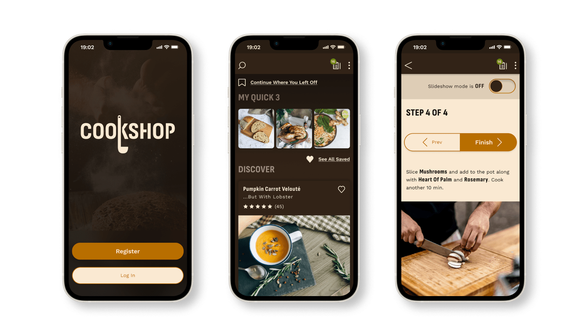
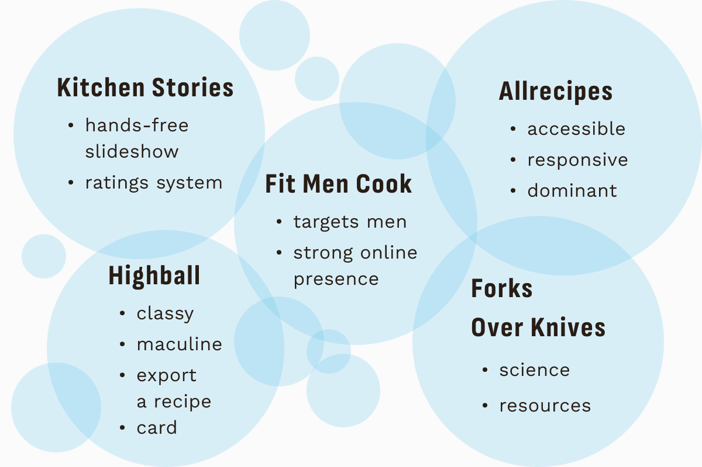
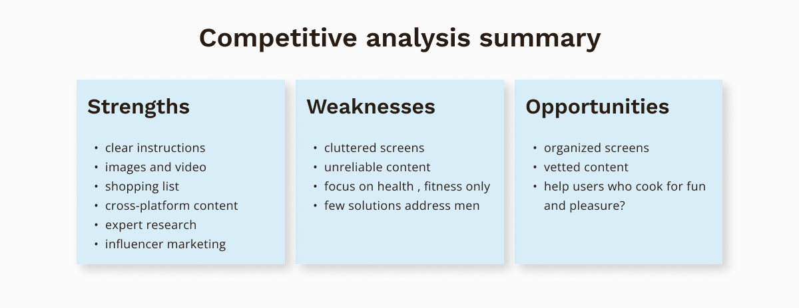
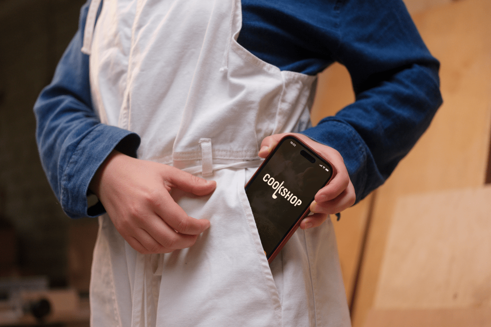

Cookshop
Project overview
The objective was to design a recipes app for men who cook at home. I conducted primary and secondary research to assess the unique needs of male home cooks, if any, and the extent to which these needs are met or unmet by existing products.
Two interesting questions arose during the design process. The first relates to my own assumptions about recipe content online: is it written for women, is this an obstacle for male cooks, and how? The second question felt simple but wasn't: what exactly is "masculine" UI?
The outcome of the design process was a recipes app for desktop and mobile that helps an underserved group of home cooks express themselves reliably in the kitchen, inspired by a product that feels bold, exciting, and elegant.
Goals
-
1. Design a recipes app to answer the unique needs of men who cook at home.
-
2. Develop a responsive interface for the recipes app that will appeal to the target audience.
Constraints
My role
UX and UI designerTimeframe
15 weeksTools
FigmaUX process
Understanding the context
I began by conducting secondary research into home cooking trends and outcomes, paying particular attention to any differences by gender, in order to understand the unique context of home cooks who identify as male. I collected four important takeaways:
- 1. Cooking at home is good for you. It leads to improved diet and health, greater happiness, and a longer life. Women and married men have so far benefited the most.
- 2. Men love to cook. Studies have shown that 82% of men enjoy home cooking, compared to just 75% of women.
- 3. In spite of this, women cook much more than men in all countries. In 2020, only 1/3 of the meals cooked at home were prepared by men.
- 4. Men are cooking more often. Still, young men continue to experience lower skills and confidence in cooking than young women at the stage of living on their own for the first time.
My hypothesis was that access to male-targeted recipe material can help. Male home cooks require material that is interesting, relevant, and reliable.
Understanding the landscape
I conducted market research to find out what solutions exist, and how they address the needs of male home cooks. I found that while a variety of recipe apps appear to be neutrally-targeted, their branding and tone may be biased towards a feminine assumption. Explicitly male-oriented material was overwhelmingly focused on fitness and health objectives. There was little to no recipe material addressing an audience of men who cook for pleasure.
 Understanding the user
Primary research in the form of 5 in-person qualitative interviews and 1 quantitative survey of 75 tech-savvy male home cooks, helped me gain insight into my target users. The testing objective was to understand their cooking habits, motivations, pain points, and positive feelings about cooking. I found that
- feeling inspired
- building their skills
- cooking for others
- irrelevant content
- unreliable recipes
- grocery shopping
Surprises
- 1. Subjects were a lot more motivated by creativity and cooking for others than anything else (health, independence, or the achievement of mastering a life skill).
- 2. None of the subjects said: “I don't like recipe blogs, because they sound like they are written for girls and women,” nor “the visuals on recipe sites are too feminine”.
Conclusions
I found no evidence to directly support my assumption that recipe content is overtly and overly focused on a female audience, nor that this alienates men from using recipes and cooking at home.
Certain frustrations shared by users, such as “too much fluff,” “missing steps,” and “everything takes longer than the estimate,” could be interpreted as the result of feminizing bias in recipe writing, but this is irrelevant to my design process. What matters is that these are needs and desires unmet by existing recipe products.
I would focus on addressing those, rather than the simplistic assumptions I started out with.

{kind=link}
{kind=link}
{kind=link}
{kind=link}
{kind=link}
MVP
A comparative analysis of user and competitor research revealed an opportunity to adress an underserved niche. The new product would gain a competitive edge by providing the following:
- 1. Inspire cooks who crave self-expression and pleasure with intuitive recipe discovery and supported experimentation.
- 2. Satisfy cooks who seek clarity and information by providing reliable time and effort estimates.
- 3. Help men cook for others with easy servings adjustment, social features, and shopping list.
Paper prototype
{kind=link}
I prototyped the core experiences of search, shop, cook, and share, and performed a round of usability testing with the objective of assessing the navigation and structure. Participants performed six tasks in a controlled environment:
{kind=link}
Testing helped reduce the number of screens, simplify the navigation header, and clarify a rating promt.
{kind=link}
{kind=link}
Designing UI "for men"
The second interesting question in this design process was: what will make this product look and feel like a masculine recipes app? I started out with two potential directions.
"The Gatsby"
{kind=link}
The first direction is inspired by Jay Gatsby, titular character of F. Scott Fitzgerald's classic novel. A self-made gentleman and architect of brilliant parties, he embodies two core Cookshop values: independence, and the ability to shine effortlessly as a host. It's a pared-down Art Deco style with a touch of French countryside to bring the feeling of effortless elegance and coolness to the kitchen.
"The Bond"
{kind=link}
The second direction combines the calm and classic masculine style of a vintage cigar lounge with the sleek, ultramodern surfaces of the Aston Martin. It defines an elegant space that could house the recipe content with warmth and authority, resulting in a smooth and pleasant experience.
(re)Defining rules
Testing these options was followed by visual research of male-addressing brands. This led me to identify dominant themes and zero in on precise conditions that cause an interface to feel masculine. I discovered two:
- 1. Bold typography
- 2. Dark background.
Because Cookshop is a recipes app, I added two more necessary conditions:
- 3. It must look like a recipe app.
- 4. Content must be legible from a distance and on the go.
The question of creating a "masculine recipes UI" became irrelevant. The visual identity could not rely on stereotypical representations of masculinity. Instead it should resonate with the target audience and inspire them to cook, host, "show off their skills." After preference testing and gathering additional qualitative feedback, a final three conditions joined the list. Male-identifying home cooks repeatedly expressed desire for a product that is
- 5. Attractive
- 6. Appetizing
- 7. Exciting
{kind=link}
Style guide
The style guide for Cookshop is the result of a deliberate effort to craft an identity that is grounded in research, so it can move beyond rigid stereotypes. Rather than flatly "masculine" it is warm, elegant, bold, exciting, and offers a visually engaging and inclusive experience.
{kind=link}
{kind=link}
{kind=link}
{kind=link}
{kind=link}
{kind=link}
{kind=link}
{kind=link}
Next Steps
-
1. Prototype interactions and test.
A high-fidelity prototype and second round of usability testing will help validate the improvements made after round one, and address new issues arising from the application of the brand.
-
2. Conduct an accessibility audit.
Following usability testing, a thorough accessibility audit will ensure the app complies with accessibility standards and address any issues discovered.
-
3. Develop monetization strategies
A subscription model can offer premium features such as exclusive recipes or personalized meal planning. Strategic e-commerce integration for ingredient purchases or a meal kit plan can provide affiliate commissions. This would contribute to revenue generation as well as enhance the user experience: a dislike for shopping was prevalent among users.
Key learnings
-
1. Challenging assumptions through research.
In this project, I had to challenge my preconceived notions about gender bias in recipe content. Via thorough primary and secondary research, I gathered empirical data that enabled me to make design decisions grounded in real insights rather than assumptions.
-
2. Designing for inclusivity.
The challenge of designing a "masculine recipe brand" meant creating a visual identity that speaks to my target audience without relying on gender stereotypes. I met this challenge by grounding decisions in research, exploring a wide range of masculine identities, and digging deeper to get the core principles that cause a design to feel "masculine."